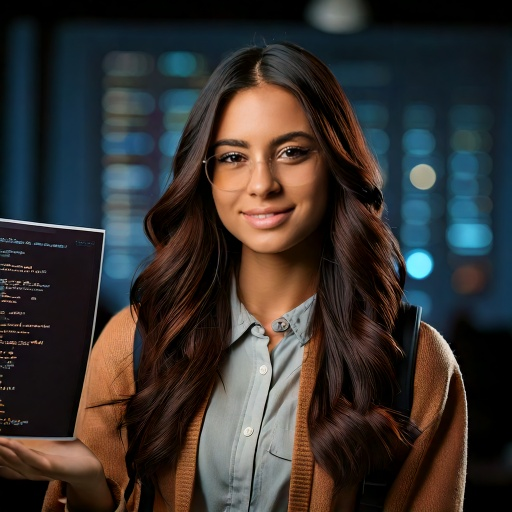
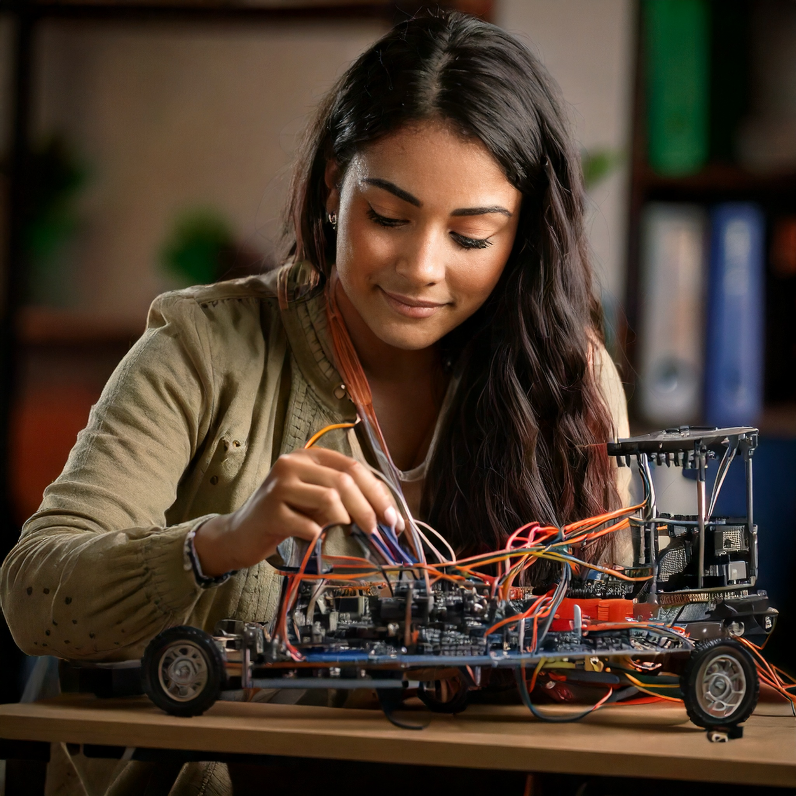

Soy una persona independiente y capaz de pasar cualquier obstáculo y cumplir las metas que me proponga.
Una ingeniera full stack que puede desarrollarse en cualquier ámbito de la carrera.
Cualidades
Soy disciplinada
Sé trabajar en equipo
Sé organizar mi tiempo
Soy autodidacta
Habilidades
Creación y administración de bases de datos
Resolución de problemas
Diseño de páginas web
Programación
Aficiones
Me gusta el deporte:
Judo
Básquet
Me gusta la música:
Rock, electro, balada, folk
Tocar guitarra
Leer:
Libros de suspenso
Libros de romance
Tecnologías de la Información
Mis proyectos

He desarrollado y presentado proyectos en js esto con ayuda del trabajo y
colaboración en equipo
Mi primer proyecto importante fue el desarrollo de un proyecto en js donde
simulabamos la reproducción de bacterias

El proyecto que más me ha gustado es uno en el que estoy trabajando actualmente, el
usar servomotores, sensores, etc. me llama mucho la atención